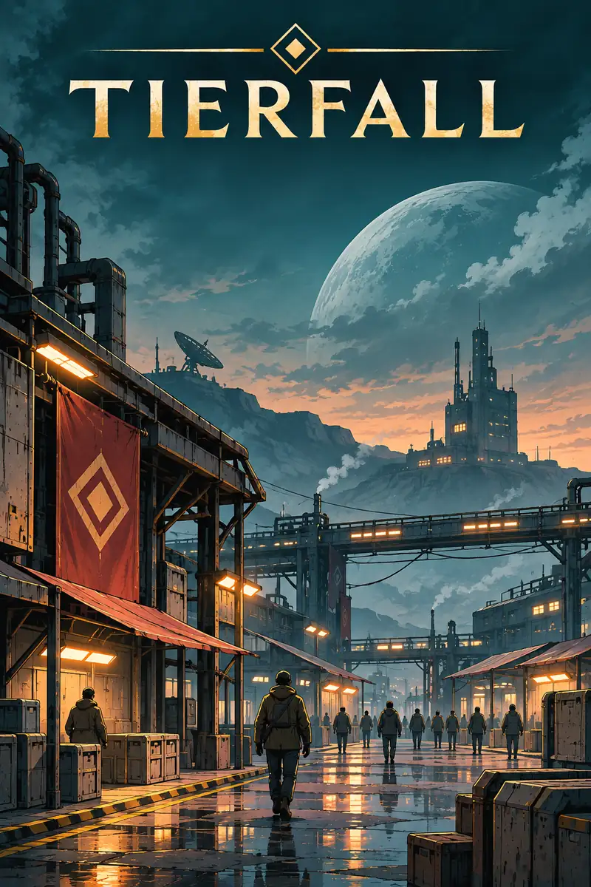

CURRENT SCENENarrator
YOUR DECISIONChoose what matters to you.
Saved on this device
Read each scene and choose what you want to say or do. Press 1, 2, 3, or 4 to pick a choice. The journal remembers decisions. Your game saves after every choice on this device. Use Export to keep a backup.

NEW STORY
Your job and past change the way you experience the story. No choice is the wrong one.
Friends may use your nickname. Officials use your full name.
Estimated campaign: 5–10 hours when complete. This early playable preview contains Chapter One only.
This chart shows major regions, not exact distances or travel routes. Different moons and stations depend on each other for food, parts, labor, and security.
Saved on this device